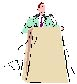

This page
best viewed with: |
This Web
site created and managed with: |
Welcome to my Barmy Home Page! This Home Page was made to preserve the precious memories of my Barmitzvah, one of the most important and happy days of my life. I don't want to remember my barmy by opening an old drawer and pulling out some photos, I want these reminders kept in a safe place where everyone can see them. Obviously, mainly family will visit this page, but at least by having things on the internet they are available to everyone and they will (hopefully) last longer.
| Summaries - Read the summaries of the sections of my Parsha & my haftorah. Also has my barmitzvah prayer. | |
|  | Speeches - Read all the speeches that were said throughout the barmy, including Dad's speech at the Kiddush and all the rest on Sunday night. |
| Photos - see part of the huge photo collection. Some were taken at the shule prior to the event, most are at the reception. |
In case you couldn't remember, my Parsha was Bo (Exodus 10:1 - 13:16), my Maftir was also Bo (Exodus 13:14 -13:16), and my Haftora was Haftoras Bo (Jeremiah 46:13 - 46:28).
This page
best viewed with: |
This Web
site created and managed with: |
Copyright 1998 Jeremy Epstein. This site is a member of the JazaWeb Network.